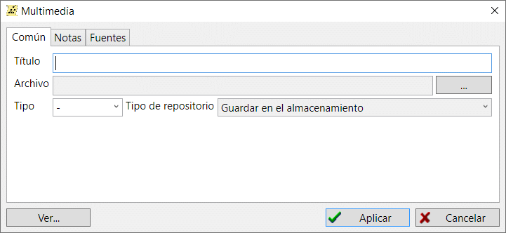

Los archivos multimedia almacenan documentos, fotos, audio y vídeo.
Hay tres formas de almacenar contenido multimedia en la base de datos: almacenar como enlace directo a un archivo, almacenar como archivo y almacenar en "almacenamiento". Lea el artículo Almacenamiento de archivos para obtener información adicional. almacenamiento de archivos para obtener información adicional.
Los archivos multimedia se encuentran en un directorio unificado para todo el contenido multimedia digitalizado disponible. En cualquier momento se puede acceder a este directorio y visualizar el archivo deseado. Las fotos, como tipo de registro multimedia, pueden utilizarse como retrato de una persona. .
Hay un punto crucial a la hora de añadir nuevos registros multimedia a la base de datos: utilice con cuidado cualquier archivo externo. No debe añadir archivos con un tamaño superior a 10 MB utilizando el tipo de almacenamiento "en archivo". Normalmente, estos archivos tan grandes son contenidos de audio o vídeo con tasas de compresión muy pobres. Esto aumentaría drásticamente el tamaño de la base de datos. Se recomienda almacenar los contenidos de gran tamaño como un enlace a un archivo externo o como "almacenamiento"— un directorio especial situado en la misma carpeta que la base de datos.

La pestaña "Multimedia" de la ventana principal de trabajo contiene una tabla unificada con todos los contenidos multimedia disponibles en la base de datos. A la derecha de la tabla, un resumen de registros muestra información sobre el registro seleccionado y las referencias hechas desde otros registros a éste.
Ver también: Nota, Fuente, Almacenamiento de contenido multimedia.